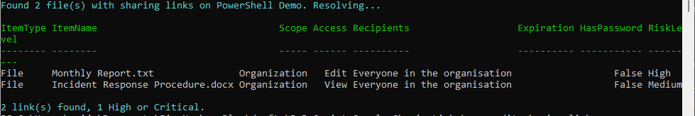

Find and risk-rate SharePoint sharing links (spot oversharing before Copilot)
Summary
Broad sharing links — "Anyone with the link" and "People in your organization" — are a common source of Microsoft Search and Copilot oversharing. This script finds them on a site and risk-rates each one, so you can act on the exposure that matters first.
It does not walk every file. Instead it discovers links through the hidden groups SharePoint creates to back each one — named SharingLinks.<fileGuid>.<type>.<linkId> — so the work scales with how much is actually shared, not with library size. Then it:
- reads the
SharingLinksgroups to get the file GUIDs, - resolves those GUIDs to file paths in one pass over the document libraries (
Get-PnPFilehas no-UniqueId, so a metadata match is the reliable resolution), - pulls the real link with
Get-PnPFileSharingLink— the type in the group name is only a hint; the authoritative scope and access come from the cmdlet, - scores each link:
| Risk factor | Effect |
|---|---|
| Anonymous ("anyone with the link") | worst starting point |
| Organization ("anyone in the company") | real internal exposure |
| Users (specific people) | sharing working as intended |
| Edit vs View | Edit is worse everywhere |
| No expiry on a broad link | it lingers |
| Anonymous with no password | a plain open door |
giving each link a Low / Medium / High / Critical rating. Use -MinRisk to show only the links worth acting on, and -CsvPath to export.

Note
Reading sharing links requires Site Owner / Site Collection Administrator rights on the site. Register an app for interactive sign-in once with Register-PnPEntraIDAppForInteractiveLogin and pass its client id with -ClientId.
This is a focused, single-site sample. The full tool it is drawn from adds tenant-wide scanning, revoke-by-filter, and CSV/HTML reporting: SharingLinkAudit.
<#
.SYNOPSIS
Finds and risk-rates the sharing links on a SharePoint Online site, so you can
spot oversharing (the "Anyone" and "People in your organization" links that
quietly widen access) before Microsoft Search and Copilot surface it.
.DESCRIPTION
Rather than walking every file, this discovers links through the hidden groups
SharePoint creates to back them - each one is named
SharingLinks.<fileGuid>.<type>.<linkId> - so the work scales with how much is
actually shared, not with how big the library is. For each file that has a
link it:
1. reads the SharingLinks groups to get the file GUIDs,
2. resolves those GUIDs to file paths in one pass over the document
libraries (Get-PnPFile has no -UniqueId, so a metadata match is the
reliable resolution),
3. pulls the real link with Get-PnPFileSharingLink - the "type" in the group
name is only a hint, the authoritative scope/access come from here,
4. scores each link:
Anonymous "anyone with the link" is the worst starting point
Organization "anyone in the company" is real internal exposure
Users "specific people" is sharing working as intended
Edit is worse than View; a broad link with no expiry lingers; an
anonymous link with no password is a plain open door
giving each a Low / Medium / High / Critical risk word.
.PARAMETER SiteUrl
The SharePoint Online site to audit, e.g. https://contoso.sharepoint.com/sites/Marketing
.PARAMETER ClientId
The Entra app (client) ID registered for PnP PowerShell interactive sign-in.
.PARAMETER IncludeFolders
Also report folder sharing links (off by default; file links are the common case).
.PARAMETER MinRisk
Only return links at or above this risk level (Low, Medium, High, Critical).
.PARAMETER CsvPath
Optional. Also write the rows to this CSV path.
.EXAMPLE
.\Audit-SharingLinks.ps1 -SiteUrl https://contoso.sharepoint.com/sites/Marketing -ClientId 00000000-0000-0000-0000-000000000000
Lists every sharing link on the site, most risky first.
.EXAMPLE
.\Audit-SharingLinks.ps1 -SiteUrl https://contoso.sharepoint.com/sites/Marketing -ClientId <id> -MinRisk High -CsvPath .\risky-links.csv
Only the High and Critical links, exported to CSV.
.NOTES
Requires the PnP.PowerShell module and enough rights to read sharing links
(Site Owner / Site Collection Administrator for a single site). Register an app
for interactive sign-in once with Register-PnPEntraIDAppForInteractiveLogin.
This is a focused, single-site sample. The full tool it is drawn from adds
tenant-wide scanning, revoke-by-filter, and CSV/HTML reporting:
https://github.com/gvijaikumar9/SharingLinkAudit
#>
[CmdletBinding()]
param(
[Parameter(Mandatory)][string] $SiteUrl,
[Parameter(Mandatory)][string] $ClientId,
[switch] $IncludeFolders,
[ValidateSet('Low', 'Medium', 'High', 'Critical')][string] $MinRisk = 'Low',
[string] $CsvPath
)
Set-StrictMode -Version Latest
$ErrorActionPreference = 'Stop'
# --------------------------------------------------------------------------
# Pure helper - turn a link's shape into a single risk word.
# --------------------------------------------------------------------------
function Get-LinkRisk {
param(
[string] $Scope, # Anonymous | Organization | Users
[string] $LinkType, # View | Edit
$Expiration, # $null when none set
[bool] $HasPassword
)
$score = 0
switch ($Scope) {
'Anonymous' { $score += 3 }
'Organization' { $score += 1 }
default { $score += 0 } # Users / specific people
}
if ($LinkType -eq 'Edit') { $score += 2 }
$broad = $Scope -in @('Anonymous', 'Organization')
if ($broad -and -not $Expiration) { $score += 1 }
if ($Scope -eq 'Anonymous' -and -not $HasPassword) { $score += 1 }
if ($score -ge 5) { 'Critical' }
elseif ($score -ge 3) { 'High' }
elseif ($score -ge 1) { 'Medium' }
else { 'Low' }
}
# --------------------------------------------------------------------------
# Resolve a set of file GUIDs to their paths, by walking the document
# libraries once. The SharingLinks group name gives a file GUID, but
# Get-PnPFileSharingLink needs a URL, and Get-PnPFile has no -UniqueId - so
# this metadata match is the reliable resolution. It stops early once every
# needed GUID is found.
# --------------------------------------------------------------------------
function Resolve-FileRefMap {
param([Parameter(Mandatory)][string[]] $NeededGuids)
$want = [System.Collections.Generic.HashSet[string]]::new()
foreach ($g in $NeededGuids) { [void]$want.Add($g.ToLower()) }
$map = @{}
$libs = Get-PnPList | Where-Object { -not $_.Hidden -and $_.BaseTemplate -eq 101 }
foreach ($lib in $libs) {
if ($map.Count -ge $want.Count) { break }
$items = Get-PnPListItem -List $lib -PageSize 500
foreach ($item in $items) {
$uid = "$($item.FieldValues['UniqueId'])".ToLower()
if ($uid -and $want.Contains($uid) -and -not $map.ContainsKey($uid)) {
$map[$uid] = [pscustomobject]@{
FileRef = $item.FieldValues['FileRef']
FileName = $item.FieldValues['FileLeafRef']
IsFolder = $item.FileSystemObjectType -eq 'Folder'
}
if ($map.Count -ge $want.Count) { break }
}
}
}
return $map
}
# --------------------------------------------------------------------------
# Main
# --------------------------------------------------------------------------
Connect-PnPOnline -Url $SiteUrl -Interactive -ClientId $ClientId
$siteTitle = (Get-PnPWeb).Title
$rank = @{ Low = 0; Medium = 1; High = 2; Critical = 3 }
# 1. discovery - only the files that actually have links
$linkGroups = Get-PnPGroup | Where-Object { $_.Title -like 'SharingLinks.*' }
if (-not $linkGroups) {
Write-Host "No sharing links found on $siteTitle." -ForegroundColor DarkYellow
return
}
$guids = $linkGroups | ForEach-Object { ($_.Title -split '\.')[1] } | Select-Object -Unique
Write-Host ("Found {0} file(s) with sharing links on {1}. Resolving..." -f @($guids).Count, $siteTitle) -ForegroundColor Cyan
# 2. resolve GUIDs to file paths in one pass
$map = Resolve-FileRefMap -NeededGuids $guids
# 3. enrich per file with the real link data and score it
$rows = foreach ($guid in $guids) {
$entry = $map[$guid.ToLower()]
if (-not $entry) {
Write-Warning "A link exists for GUID $guid but its file could not be resolved (deleted, or in a list this pass did not cover)."
continue
}
if ($entry.IsFolder -and -not $IncludeFolders) { continue }
$links =
if ($entry.IsFolder) { Get-PnPFolderSharingLink -Folder $entry.FileRef -ErrorAction SilentlyContinue }
else { Get-PnPFileSharingLink -Identity $entry.FileRef -ErrorAction SilentlyContinue }
foreach ($link in $links) {
$lk = $link.Link
if (-not $lk) { continue } # a link with no Link facet - skip rather than crash under StrictMode
$granted = $link.GrantedToIdentitiesV2
$recipients =
if ($granted) {
($granted | ForEach-Object {
$u = $_.User
if ($u -and $u.Email) { $u.Email }
elseif ($u -and $u.DisplayName) { $u.DisplayName }
else { '(unknown)' }
}) -join '; '
}
elseif ($lk.Scope -eq 'Organization') { 'Everyone in the organisation' }
elseif ($lk.Scope -eq 'Anonymous') { 'Anyone with the link' }
else { '(none resolved)' }
[pscustomobject]@{
ItemType = if ($entry.IsFolder) { 'Folder' } else { 'File' }
ItemName = $entry.FileName
Scope = $lk.Scope # Anonymous | Organization | Users
Access = $lk.Type # View | Edit
Recipients = $recipients
Expiration = $link.ExpirationDateTime
HasPassword = $link.HasPassword
RiskLevel = Get-LinkRisk $lk.Scope $lk.Type $link.ExpirationDateTime $link.HasPassword
ItemPath = $entry.FileRef
}
}
}
$rows = @($rows | Where-Object { $rank[$_.RiskLevel] -ge $rank[$MinRisk] })
# Most risky first.
$rows = @($rows | Sort-Object @{ Expression = { $rank[$_.RiskLevel] }; Descending = $true }, ItemName)
if ($rows.Count -eq 0) {
Write-Host "No sharing links at or above '$MinRisk' risk on $siteTitle." -ForegroundColor DarkYellow
}
else {
$rows | Format-Table ItemType, ItemName, Scope, Access, Recipients, Expiration, HasPassword, RiskLevel -AutoSize
$critical = @($rows | Where-Object { $_.RiskLevel -in 'High', 'Critical' }).Count
Write-Host ("{0} link(s) found, {1} High or Critical." -f $rows.Count, $critical) -ForegroundColor Cyan
}
if ($CsvPath -and $rows.Count -gt 0) {
$rows | Export-Csv -Path $CsvPath -NoTypeInformation -Encoding UTF8
Write-Host "Report written to $CsvPath" -ForegroundColor Green
}
Check out the PnP PowerShell to learn more at: https://aka.ms/pnp/powershell
The way you login into PnP PowerShell has changed please read PnP Management Shell EntraID app is deleted : what should I do ?
Source Credit
Sample first appeared on https://github.com/gvijaikumar9/SharingLinkAudit
Contributors
| Author(s) |
|---|
| Vijay Kumar G |
Disclaimer
THESE SAMPLES ARE PROVIDED AS IS WITHOUT WARRANTY OF ANY KIND, EITHER EXPRESS OR IMPLIED, INCLUDING ANY IMPLIED WARRANTIES OF FITNESS FOR A PARTICULAR PURPOSE, MERCHANTABILITY, OR NON-INFRINGEMENT.